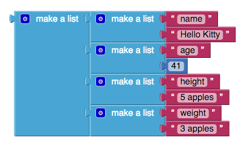
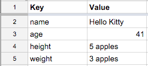

List of Lists¶
A list is a sequence of items. In App Inventor, you create a list by using a make a list block, found in the Lists group. For example:
A list of lists is a list whose elements are other lists. For example:
Often, the sublists only contain two items, and those items represent a key-value pair. In the list of lists shown above, "name" is a key and "Hello Kitty" is its value. In effect, a list of lists can be thought of as a lookup table. Conceptually, this is equivalent to a spreadsheet with two columns:
The look up in pairs block can be used to retrieve the value for a given key. For example, if we wanted to show Hello Kitty's height from the list of lists, we might do something like this:
We prepared a project for you that demonstrates how the make a list and look up in pairs blocks work in practice. You can download HelloKittyFacts.aia), make some changes, and run it on your phone to see how those changes affect the outcome.